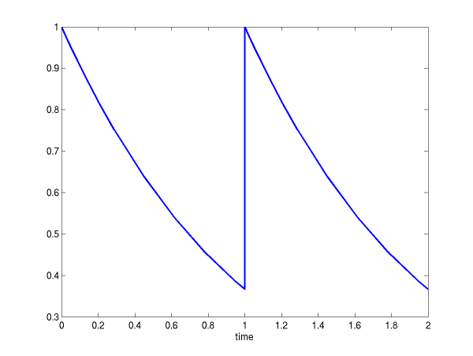
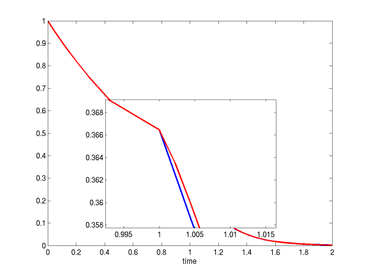

Notes
Contents
Controlling unphysical solutions and integrating over discontinuities
We refer here to ODEs (and CVODE). DAE or IDA-specific issues will be explicitly mentioned.
A) Definitions
First of all, to put things in context and lay blame where it's due, recall the chain
The only issues with unphysical solution components that can be resolved by various settings and/or 'tricks' with numerical solvers such as those in SUNDIALS are those arising in the second step, from the mathematical model to its numerical solution. It is unreasonable to expect an ODE/DAE solver to resolve problems introduced in the modeling part.
On the other hand, issues with discontinuities in the RHS function arise (genuinely in some applications) in the first step, namely in modeling a certain physical phenomenon.
Secondly, let's define the two problems under discussion (from the perspective of the above comment).
A1) Unphysical solution components
In many applications, some components in the true solution (of the mathematical model) are always positive or non-negative, though at times very small. In the numerical solution, however, small negative (hence unphysical) values can then occur. In most cases, these values are harmless, and simply need to be controlled, not eliminated.
Note that we assume that the mathematical model itself does not lead to unphysical solutions. In other words, if we were able to exactly solve it, its solution would be physically acceptable. If that is not true (e.g. the model for some fluxes is such that it leads to negative concentrations) then the mathematical model itself is unphysical in some regions and the solution is to go back and revisit the first step in the chain above. In such a case, it may be necessary to switch between different models depending on the operating conditions, which could introduce discontinuities in the ODE right-hand side function and thus we may end up in the territory covered by the next problem.
The CVODE cvdenx problem is an example of unphysical solutions introduced by the numerical computation. This problem models three chemical reactions and the 3 concentrations would always be positive (and less than or equal to 1) if the system of ODEs were solved exactly. However, depending on the integration tolerances (more on this later), it is possible to obtain small negative values for y1 and y3 or even completely unrealistic results!
A2) Discontinuities in the RHS function
In certain types of problems (most notably in some controls problems) the underlying mathematical model must be changed in certain regions of the solution space or the solution itself must be perturbed and this can introduce discontinuities in the ODE right-hand side. The point (in time, or whatever the independent ODE variable happens to be) at which such a change occurs can be defined explicitly (i.e., it is known a priori or can be determined externally to the ODE solver) or implicitly (i.e., it is triggered by the satisfaction of some condition involving the ODE solution).
- For example, a model for the water flow in your sprinkler system will have a discontinuity whenever the system is turned on, the time at which this happens being known a priori. This is an explicitly-defined discontinuity.
- On the other hand hand, imagine having a simple model based on F=ma for the evolution of the position of an airplane and wish to use it during landing. While the airplane is airborne, you integrate your ODEs for x,y,z but once the altitude z becomes 0 an additional reaction force needs to be introduced into the model (the ground reaction force). Since the time at which the airplane touches ground cannot be known in advance, this is an implicitly-defined discontinuity (the condition in this case being z=0).
B) Treatment
In attempting to solve one of these problems, it is important to remember that you should never simply change the solution y passed as an (input only) argument to the RHS or RES functions!
B1) Unphysical solution components
Note that, if unphysical components appear in the numerical solution, the amount by which the physical bounds are violated will be of the order of the absolute tolerance. The following pieces of advice are relevant:
-
The way to control the size of unwanted physical violations of the computed values
is with tighter absolute tolerances. This requires some
knowledge of the noise level of these components, which may or may not
be different for different components. Some experimentation may be
needed.
The SUNDIALS solvers allow for the RHS/RES functions to return a positive flag indicating a "recoverable error". In this case, the solver will attempt to correct this by reducing the step size (which, for all practical purposes, is equivalent to a tightening of the tolerances!). Note that this assumes that the model is not at fault for the unphysical values and therefore, if y was physical at the previous step there must be some step size that will keep it physical. - If output plots or tables are being generated, and it is important to avoid having negative numbers appear there (for the sake of avoiding a long explanation of them, if nothing else), then eliminate them, but only in the context of the output medium. Then the internal values carried by the solver are unaffected. Remember that a small negative value in y returned by CVODE, with magnitude comparable to abstol or less, is equivalent to zero as far as the computation is concerned.
- The user's RHS function should never change a negative value in the solution vector y to a non-negative value, as a "solution" to this problem. This can cause instability. If the RHS routine cannot tolerate a zero or negative value (e.g. because there is a square root or log of it), then the offending value should be changed to zero or a tiny positive number in a temporary variable (not in the input y vector) for the purposes of computing f(t,y).
B2) Discontinuities in the RHS function
If the jumps at the discontinuities are relatively small, simply keep them in the RHS function, and let the integrator respond to them (possibly taking smaller steps through each point of discontinuity).
If the jumps are large, it is more efficient to stop at the point of discontinuity and restart the integrator. The following steps must therefore be taken:
-
Integrate up to the point of discontinuity
The method used to reach that location depends on whether the discontinuity is defined explicitly or implicitly. In either case, it is critical that the RHS function does not incorporate the discontinuity while integrating towards it.
For an explicitly-defined discontinuity (i.e. tdisc is known a priori) simply make that location an output time (tout=tdisc) and integrate to that point. If a smooth extension of the model over the discontinuity (see below) does not exist, in order to prevent the solver ever attempting a RHS evaluation at a point beyond the location of the discontinuity, also make that location a stopping time by calling CVodeSetStopTime(cvode_mem, tdisc).
To stop when the location of the discontinuity is determined by the solution (implicitly-defined discontinuity), use the rootfinding feature (available both in CVODE/CVODES and IDA). In other words, the location of the discontinuity is the zero of some function g of the solution (i.e.,g(tdisc, y(tdisc))=0). Note that, in this situation, you cannot use CVodeSetStopTime to prevent the discontinuity from being "seen" during this integration phase. Indeed, the rootfinding algorithm relies on detecting sign changes in g and therefore needs to be allowed to evaluate it (and implicitly the RHS) on both sides of tdisc. Therefore, during this phase only, you need to have a smooth extension over the discontinuity so that the step across it and the subsequent rootfinding can be done efficiently. -
Incorporate the discontinuity
Depending on the (problem-dependent) type of discontinuity, you can now adjust the solution y (for example by adding a jump) or switch to a new ODE model (for example by flipping a switch in the user data passed to RHS to activate the use of the new ODE model for the next integration phase). -
Reinitialize the solver at the point of discontinuity
This step is crucial and is the reason for all the work done in step 1 to identify the location of the discontinuity. Recall that the SUNDIALS solvers implement multistep methods and therefore use past solution history (stored internally) to advance the solution in time. Once a discontinuity occurred, the solutions at previous steps are not suitable any more and must therefore be discarded. Calling the reinitialization function CVodeReInit ensures that the solvers restart at order 1 and begin building up a fresh solution history.
If using IDA, you must ensure that a solution (y,y') consistent with the DAE is passed to IDAReInit. Therefore, you may need to first call IDACalcIC. - Integrate from the point of discontinuity
C) Examples
The examples below illustrate the proper treatment of the above problems.
C2) Discontinuities in the solution or RHS function
The example cvsdiscx [ view | download ] solves a simple 1D problem and integrates it over the two different types of discontinuities:
-
Discontinuity in solution
y' = -y ; y(0) = 1 ; t = [0,1] y' = -y ; y(1) = 1 ; t = [1,2]
The integration results are shown in the figure below. -
Discontinuity in RHS (y')
y' = -y ; y(0) = 1 ; t = [0,1] z' = -5*z ; z(1) = y(1) ; t = [1,2]
This case is solved twice, first by explicitly treating the discontinuity point and secondly by letting the integrator deal with the discontinuity. The integration results are shown in the figure below. The red line is the solution obtained by reinitializing the solver at the discontinuity point, while the blue line is the solution obtained by letting the solver step over the discontinuity without reinitialization. The differences between the two solutions are of the order of the absolute tolerances. However, the first solution is more correct (note the negative curvature of the red curve right after the discontinuity).
Switching on/off forward sensitivity computations
One of the common applications of sensitivity analysis is in generating derivative
information for dynamically-constrained optimization when using a reduced-space
approach. Depending on the optimization method used, several solutions of the
underlying ODE system may be required in between evaluations of the sensitivities
(for example when using a line search).
To turn off sensitivity calculations (without deallocating any sensitivity-related memory
or resetting any of the optional inputs, so that sensitivties can later be reactivated)
it is most efficient to use CVodeSensToggleOff.
The example code cvsfwdswitchx [ view | download ] (a modification of the CVODES example cvsfwddenx) demonstrates this.
Recall that sensitivity calculations are enabled by CVodeSensMalloc and CVodeSensReInit and are disabled by CVodeSensFree (after calling this one, they can be re-enabled only by calling CVodeSensMalloc) and CVodeSensToggleOff.
The example code cvsfwdswitchx [ view | download ] (a modification of the CVODES example cvsfwddenx) demonstrates this.
Recall that sensitivity calculations are enabled by CVodeSensMalloc and CVodeSensReInit and are disabled by CVodeSensFree (after calling this one, they can be re-enabled only by calling CVodeSensMalloc) and CVodeSensToggleOff.